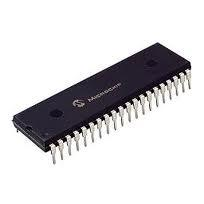
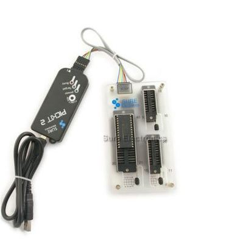

J’ai choisi de travailler avec le PIC 18F4550 de chez Microchip principalement pour son prix (moins de 10€).

Ce microcontroleur possède entre autre :
- un module USB
- 32Ko de mémoire flash (pour le programme)
- 2Ko de mémoire RAM
- 35 bits d’entrées/sorties numériques
- 10 convertisseurs numériques/analogiques
Les requis
Avant de vous lancer là-dedans, il vous faut :
- Un programmateur (pour transférer vos programmes dans le composant); on utilise le PicKit2 (reconnu sous linux et Windows). Rendez-vous chez les Chinois sur EBay pour l’acheter. Pour ma part, je l’ai acheté chez Sure Electronics (25€ environ pour le pickit2 et la plaque de soket). Attention, il faut le pickit2 (pas le 1 pas le 3) ! le pickit2 est complètement reconnu sous linux, par contre les autres versions …
- Un mini-lab (pour faire fonctionner votre microcontrôleur); on va le fabriquer, ce sera expliqué dans les prochains billets (Comptez 40 à 50€ – 10€ pour la gravure chez un professionnel et le reste en composants)
- un ordinateur avec une prise USB (c’est évident, mais je préfère préciser)
- Un compilateur C; parce qu’on va programmer en C. Si vous utilisez Windows, vous pouvez utiliser l’environnement de Microchip. Pour ma part, étant sous linux, j’utilise SDCC. On y ajoutera un IDE pour se faciliter la vie. J’utilise Code::Blocks. Je vous expliquerez plus loin comment on installe tout ça.
- Je vous recommande une plaque d’essai pour câbler votre propre électronique On verra plus loin pour faire l’acquisition d’un petit afficheur LCD (à moins de 10€) pour déboguer les programmes (Electronique diffusion ref. L165221J200S)

Avant de continuer et de vous lancer dans ces petites dépenses, assurez-vous d’avoir un minimum de connaissances en :
- électronique numérique (qu’est-ce qu’un octet, un bit, les principales fonctions numériques, …)
- programmation C (architecture d’un programme, compilation, …)
- bidouillage (soudure, bricolage de précision, …) et avoir un fer à souder et de l’étain.
- linux (lancer une commande, installer des programmes, …) si vous voulez utiliser mes tutos
Datasheet
Ce sera votre bible pour programmer le microcontroller. Soit vous allez le chercher sur le site de microchip (http://www.microchip.com/), soit vous téléchargez la copie disponible sur le blog : pic18f4550